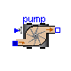
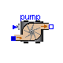

 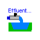
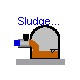
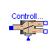
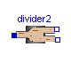
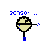
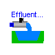
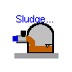
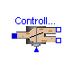
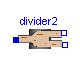
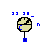


 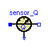
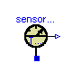
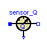
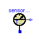

 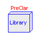
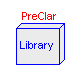

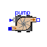
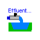
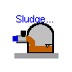
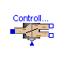
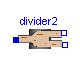
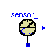
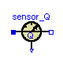
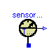
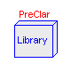
This library contains components to build models of biological municipal
wastewater treatment plants based on the Activated Sludge Model No.3 (ASM3) by the
International Association on Water Quality (IAWQ) [1].
The library currently is structured in following sub-libraries:
Interfaces |
- partial ASM3 models and connectors
|
PreClar |
- primary clarifier models |
SecClar |
- several secondary settling tank models
|
Examples |
- wastewater treatment plant models
|
Main Author: Gerald Reichl Technische Universitaet Ilmenau Faculty of Informatics and Automation Department Dynamics and Simulation of ecological Systems P.O. Box 10 05 65 98684 Ilmenau Germany email: gerald.reichl@tu-ilmenau.de References: [1] M. Henze and W.Gujer and T. Mino and. M.v. Loosdrecht: Activated Sludge Models ASM1, ASM2, ASM2d, and ASM3. IWA Task Group on Mathematical Modelling for Design and Operation of Biological Wastewater Treatment, 2000.
Copyright (C) 2002 - 2003, Gerald Reichl
The Modelica package is free software; it can be redistributed and/or modified under the terms of the Modelica license, see the license conditions and the accompanying disclaimer in the documentation of package Modelica in file "Modelica/package.mo".
WasteWater.ASM3.deni

This component models the ASM3 processes and reactions taking place in an unaerated
(denitrification) tank of a wastewater treatment plant.
The InPort signal gives the tank temperature to the model.
All soichiometric and kinetic parameters of the activated sludge model No.3 (ASM3)
| Name | Default | Description |
|---|---|---|
| f_Si | 0.0 | Production of Si in hydrolysis [g COD_Si/(g COD_Xs)] |
| Y_STO_O | 0.85 | Aerobic yield of stored product per Ss [g COD_Xsto/(g COD_Ss)] |
| Y_STO_NOX | 0.80 | Anoxic yield of stored product per Ss [g OD_Xsto/(g COD_Ss)] |
| Y_H_O | 0.63 | Aerobic yield of heterotrophic biomass [g COD_Xh/(g COD_Xsto)] |
| Y_H_NOX | 0.54 | Anoxic yield of heterotrophic biomass [g COD_Xh/(g COD_Xsto)] |
| Y_A | 0.24 | Yield of autotrophic biomass per NO3-N [g COD_Xa/(g N_Snox)] |
| f_Xi | 0.20 | Production of Xi in endog. respiration [g COD_Xi/(g COD_Xbm)] |
| i_N_Si | 0.01 | N content of Si [g N/(g COD_Si)] |
| i_N_Ss | 0.03 | N content of Ss [g N/(g COD_Ss)] |
| i_N_Xi | 0.02 | N content of Xi [g N/(g COD_Xi)] |
| i_N_Xs | 0.04 | N content of Xs [g N/(g COD_Xs)] |
| i_N_BM | 0.07 | N content of biomass Xh,Xa [g N/(g COD_bm)] |
| i_SS_Xi | 0.75 | SS to COD ratio for Xi [g SS/(g COD_Xi)] |
| i_SS_Xs | 0.75 | SS to COD ratio for Xs [g SS/(g COD_Xs)] |
| i_SS_BM | 0.90 | SS to COD ratio for biomass Xh,Xa [g SS/(g COD_Xbm)] |
| x1 | 1 - f_Si | |
| x2 | -(1 - Y_STO_O) | |
| x3 | -(1 - Y_STO_NOX)/2.86 | |
| x4 | -(1 - Y_H_O)/Y_H_O | |
| x5 | -(1 - Y_H_NOX)/(2.86*Y_H_NOX) | |
| x6 | -(1 - f_Xi) | |
| x7 | -(1 - f_Xi)/2.86 | |
| x8 | -1 | |
| x9 | -1/2.86 | |
| x10 | -(4.57 - Y_A)/Y_A | |
| x11 | -(1 - f_Xi) | |
| x12 | -(1 - f_Xi)/2.86 | |
| y1 | i_N_Xs - i_N_Si*f_Si - i_N_Ss*(1 - f_Si) | |
| y2 | i_N_Ss | |
| y3 | i_N_Ss | |
| y4 | -i_N_BM | |
| y6 | i_N_BM - f_Xi*i_N_Xi | |
| y7 | i_N_BM - f_Xi*i_N_Xi | |
| y10 | -1/Y_A - i_N_BM | |
| y11 | i_N_BM - f_Xi*i_N_Xi | |
| y12 | i_N_BM - f_Xi*i_N_Xi | |
| z1 | (i_N_Xs - i_N_Si*f_Si - i_N_Ss*(1 - f_Si))/14 | |
| z2 | i_N_Ss/14 | |
| z3 | i_N_Ss/14 + (1 - Y_STO_NOX)/(14*2.86) | |
| z4 | -i_N_BM/14 | |
| z5 | -i_N_BM/14 + (1 - Y_H_NOX)/(14*2.86*Y_H_NOX) | |
| z6 | i_N_BM/14 - f_Xi*i_N_Xi/14 | |
| z7 | i_N_BM/14 - f_Xi*i_N_Xi/14 + (1 - f_Xi)/(14*2.86) | |
| z9 | 1/(2.86*14) | |
| z10 | -1/(7*Y_A) - i_N_BM/14 | |
| z11 | i_N_BM/14 - f_Xi*i_N_Xi/14 | |
| z12 | i_N_BM/14 - f_Xi*i_N_Xi/14 + (1 - f_Xi)/(14*2.86) | |
| t2 | 0.6*Y_STO_O | |
| t3 | 0.6*Y_STO_NOX | |
| t4 | -0.6/Y_H_O + i_SS_BM | |
| t5 | -0.6/Y_H_NOX + i_SS_BM | |
| t6 | f_Xi*i_SS_Xi - i_SS_BM | |
| t7 | f_Xi*i_SS_Xi - i_SS_BM | |
| t8 | -0.6 | |
| t9 | -0.6 | |
| t10 | i_SS_BM | |
| t11 | f_Xi*i_SS_Xi - i_SS_BM | |
| t12 | f_Xi*i_SS_Xi - i_SS_BM | |
| k_H_T | 3.0 | Hydrolysis rate constant at T=20 deg C [g COD_Xs/(g COD_Xh)/d] |
| K_X | 1.0 | Hydrolysis saturation constant [g COD_Xs/(g COD_Xh)/d] |
| k_STO_T | 5.0 | Storage rate constant at T=20 deg C [g COD_Ss/(g COD_Xh)/d] |
| eta_NOX | 0.6 | Anoxic reduction factor [-] |
| K_O | 0.2 | Saturation constant for Sno [g O2/m^3] |
| K_NOX | 0.5 | Saturation constant for Snox [g NO3-N/m^3] |
| K_S | 2.0 | Saturation constant for Substrate Ss [g COD_Ss/m^3] |
| K_STO | 1.0 | Saturation constant for Xsto [g COD_Xsto/(g COD_Xh)] |
| mu_H_T | 2.0 | Heterotrophic max. growth rate of Xh at T=20 deg C [1/d] |
| K_NH | 0.01 | Saturation constant for ammonium Snh [g N/m^3] |
| K_ALK | 0.1 | Saturation constant for alkalinity for Xh [mole HCO3 /m^3] |
| b_H_O_T | 0.2 | Aerobic endogenous respiration rate of Xh at T=20 deg C [1/d] |
| b_H_NOX_T | 0.1 | Anoxic endogenous respiration rate of Xh at T=20 deg C[1/d] |
| b_STO_O_T | 0.2 | Aerobic respiration rate for Xsto at T=20 deg C [1/d] |
| b_STO_NOX_T | 0.1 | Anoxic respiration rate for Xsto at T=20 deg C [1/d] |
| mu_A_T | 1.0 | Autotrophic max growth rate of Xa at T=20 deg C [1/d] |
| K_A_NH | 1.0 | Ammonium substrate saturation for Xa [g N/m^3] |
| K_A_O | 0.5 | Oxygen saturation for nitrifiers [g O2/m^3] |
| K_A_NOX | 0.5 | Saturation constant for Snox (similar to K_NOX) [g NO3-N/m^3] |
| K_A_ALK | 0.5 | Bicarbonate saturation for nitrifiers [mole HCO3/m^3] |
| b_A_O_T | 0.15 | Aerobic endogenous respiration rate of Xa at T=20 deg C [1/d] |
| b_A_NOX_T | 0.5 | Anoxic endogenous respiration rate of Xa at T=20 deg C [1/d] |
| V | 1000 | Volume of denitrification tank [m3] |
model deni "ASM3 denitrification tank" //denitrifikation tank based on the ASM3 model extends WasteWater.Icons.deni; extends Interfaces.ASM3base; // tank specific parameters parameter Modelica.SIunits.Volume V=1000 "Volume of denitrification tank"; // following 4 connectors are already in ASM3base and are inherited, // but listed hear again to avoid an icon related problem // with the sequence of extends-clauses Interfaces.WWFlowAsm3in In; Interfaces.WWFlowAsm3out Out; Interfaces.WWFlowAsm3out MeasurePort; Modelica.Blocks.Interfaces.InPort T(final n=1); equation aeration = 0; // no aeration in this tank // // volume dependent dilution term of each concentration inputSo = (In.So - So)*In.Q/V; inputSi = (In.Si - Si)*In.Q/V; inputSs = (In.Ss - Ss)*In.Q/V; inputSnh = (In.Snh - Snh)*In.Q/V; inputSn2 = (In.Sn2 - Sn2)*In.Q/V; inputSnox = (In.Snox - Snox)*In.Q/V; inputSalk = (In.Salk - Salk)*In.Q/V; inputXi = (In.Xi - Xi)*In.Q/V; inputXs = (In.Xs - Xs)*In.Q/V; inputXh = (In.Xh - Xh)*In.Q/V; inputXsto = (In.Xsto - Xsto)*In.Q/V; inputXa = (In.Xa - Xa)*In.Q/V; inputXss = (In.Xss - Xss)*In.Q/V; end deni;
WasteWater.ASM3.nitri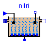
This component models the ASM3 processes and reactions taking place in an aerated
(nitrification) tank of a wastewater treatment plant.
The InPort signal gives the tank temperature to the model.
All soichiometric and kinetic parameters of the activated sludge model No.3 (ASM3)
| Name | Default | Description |
|---|---|---|
| f_Si | 0.0 | Production of Si in hydrolysis [g COD_Si/(g COD_Xs)] |
| Y_STO_O | 0.85 | Aerobic yield of stored product per Ss [g COD_Xsto/(g COD_Ss)] |
| Y_STO_NOX | 0.80 | Anoxic yield of stored product per Ss [g OD_Xsto/(g COD_Ss)] |
| Y_H_O | 0.63 | Aerobic yield of heterotrophic biomass [g COD_Xh/(g COD_Xsto)] |
| Y_H_NOX | 0.54 | Anoxic yield of heterotrophic biomass [g COD_Xh/(g COD_Xsto)] |
| Y_A | 0.24 | Yield of autotrophic biomass per NO3-N [g COD_Xa/(g N_Snox)] |
| f_Xi | 0.20 | Production of Xi in endog. respiration [g COD_Xi/(g COD_Xbm)] |
| i_N_Si | 0.01 | N content of Si [g N/(g COD_Si)] |
| i_N_Ss | 0.03 | N content of Ss [g N/(g COD_Ss)] |
| i_N_Xi | 0.02 | N content of Xi [g N/(g COD_Xi)] |
| i_N_Xs | 0.04 | N content of Xs [g N/(g COD_Xs)] |
| i_N_BM | 0.07 | N content of biomass Xh,Xa [g N/(g COD_bm)] |
| i_SS_Xi | 0.75 | SS to COD ratio for Xi [g SS/(g COD_Xi)] |
| i_SS_Xs | 0.75 | SS to COD ratio for Xs [g SS/(g COD_Xs)] |
| i_SS_BM | 0.90 | SS to COD ratio for biomass Xh,Xa [g SS/(g COD_Xbm)] |
| x1 | 1 - f_Si | |
| x2 | -(1 - Y_STO_O) | |
| x3 | -(1 - Y_STO_NOX)/2.86 | |
| x4 | -(1 - Y_H_O)/Y_H_O | |
| x5 | -(1 - Y_H_NOX)/(2.86*Y_H_NOX) | |
| x6 | -(1 - f_Xi) | |
| x7 | -(1 - f_Xi)/2.86 | |
| x8 | -1 | |
| x9 | -1/2.86 | |
| x10 | -(4.57 - Y_A)/Y_A | |
| x11 | -(1 - f_Xi) | |
| x12 | -(1 - f_Xi)/2.86 | |
| y1 | i_N_Xs - i_N_Si*f_Si - i_N_Ss*(1 - f_Si) | |
| y2 | i_N_Ss | |
| y3 | i_N_Ss | |
| y4 | -i_N_BM | |
| y6 | i_N_BM - f_Xi*i_N_Xi | |
| y7 | i_N_BM - f_Xi*i_N_Xi | |
| y10 | -1/Y_A - i_N_BM | |
| y11 | i_N_BM - f_Xi*i_N_Xi | |
| y12 | i_N_BM - f_Xi*i_N_Xi | |
| z1 | (i_N_Xs - i_N_Si*f_Si - i_N_Ss*(1 - f_Si))/14 | |
| z2 | i_N_Ss/14 | |
| z3 | i_N_Ss/14 + (1 - Y_STO_NOX)/(14*2.86) | |
| z4 | -i_N_BM/14 | |
| z5 | -i_N_BM/14 + (1 - Y_H_NOX)/(14*2.86*Y_H_NOX) | |
| z6 | i_N_BM/14 - f_Xi*i_N_Xi/14 | |
| z7 | i_N_BM/14 - f_Xi*i_N_Xi/14 + (1 - f_Xi)/(14*2.86) | |
| z9 | 1/(2.86*14) | |
| z10 | -1/(7*Y_A) - i_N_BM/14 | |
| z11 | i_N_BM/14 - f_Xi*i_N_Xi/14 | |
| z12 | i_N_BM/14 - f_Xi*i_N_Xi/14 + (1 - f_Xi)/(14*2.86) | |
| t2 | 0.6*Y_STO_O | |
| t3 | 0.6*Y_STO_NOX | |
| t4 | -0.6/Y_H_O + i_SS_BM | |
| t5 | -0.6/Y_H_NOX + i_SS_BM | |
| t6 | f_Xi*i_SS_Xi - i_SS_BM | |
| t7 | f_Xi*i_SS_Xi - i_SS_BM | |
| t8 | -0.6 | |
| t9 | -0.6 | |
| t10 | i_SS_BM | |
| t11 | f_Xi*i_SS_Xi - i_SS_BM | |
| t12 | f_Xi*i_SS_Xi - i_SS_BM | |
| k_H_T | 3.0 | Hydrolysis rate constant at T=20 deg C [g COD_Xs/(g COD_Xh)/d] |
| K_X | 1.0 | Hydrolysis saturation constant [g COD_Xs/(g COD_Xh)/d] |
| k_STO_T | 5.0 | Storage rate constant at T=20 deg C [g COD_Ss/(g COD_Xh)/d] |
| eta_NOX | 0.6 | Anoxic reduction factor [-] |
| K_O | 0.2 | Saturation constant for Sno [g O2/m^3] |
| K_NOX | 0.5 | Saturation constant for Snox [g NO3-N/m^3] |
| K_S | 2.0 | Saturation constant for Substrate Ss [g COD_Ss/m^3] |
| K_STO | 1.0 | Saturation constant for Xsto [g COD_Xsto/(g COD_Xh)] |
| mu_H_T | 2.0 | Heterotrophic max. growth rate of Xh at T=20 deg C [1/d] |
| K_NH | 0.01 | Saturation constant for ammonium Snh [g N/m^3] |
| K_ALK | 0.1 | Saturation constant for alkalinity for Xh [mole HCO3 /m^3] |
| b_H_O_T | 0.2 | Aerobic endogenous respiration rate of Xh at T=20 deg C [1/d] |
| b_H_NOX_T | 0.1 | Anoxic endogenous respiration rate of Xh at T=20 deg C[1/d] |
| b_STO_O_T | 0.2 | Aerobic respiration rate for Xsto at T=20 deg C [1/d] |
| b_STO_NOX_T | 0.1 | Anoxic respiration rate for Xsto at T=20 deg C [1/d] |
| mu_A_T | 1.0 | Autotrophic max growth rate of Xa at T=20 deg C [1/d] |
| K_A_NH | 1.0 | Ammonium substrate saturation for Xa [g N/m^3] |
| K_A_O | 0.5 | Oxygen saturation for nitrifiers [g O2/m^3] |
| K_A_NOX | 0.5 | Saturation constant for Snox (similar to K_NOX) [g NO3-N/m^3] |
| K_A_ALK | 0.5 | Bicarbonate saturation for nitrifiers [mole HCO3/m^3] |
| b_A_O_T | 0.15 | Aerobic endogenous respiration rate of Xa at T=20 deg C [1/d] |
| b_A_NOX_T | 0.5 | Anoxic endogenous respiration rate of Xa at T=20 deg C [1/d] |
| V | 1000 | Volume of nitrification tank [m3] |
| alpha | 0.7 | Oxygen transfer factor |
| de | 4.5 | depth of aeration [m] |
| R_air | 23.5 | specific oxygen feed factor [gO2/(m^3*m)] |
model nitri "ASM3 nitrification tank" // nitrification (aerated) tank, based on the ASM3 model extends WasteWater.Icons.nitri; extends Interfaces.ASM3base; // tank specific parameters parameter Modelica.SIunits.Volume V=1000 "Volume of nitrification tank"; // aeration system dependend parameters parameter Real alpha=0.7 "Oxygen transfer factor"; parameter Modelica.SIunits.Length de=4.5 "depth of aeration"; parameter Real R_air=23.5 "specific oxygen feed factor [gO2/(m^3*m)]"; WWU.MassConcentration So_sat "Dissolved oxygen saturation"; // following 4 connectors are already in ASM3base and are inherited, // but listed hear again to avoid an icon related problem // with the sequence of extends-clauses Interfaces.WWFlowAsm3in In; Interfaces.WWFlowAsm3out Out; Interfaces.WWFlowAsm3out MeasurePort; Modelica.Blocks.Interfaces.InPort T(final n=1); Interfaces.AirFlow AirIn; equation // Temperature dependend oxygen saturation by Simba So_sat = 13.89 + (-0.3825 + (0.007311 - 0.00006588*T.signal[1])*T.signal[1])* T.signal[1]; // extends the Oxygen differential equation by an aeration term // aeration [mgO2/l]; AirIn.Q_air needs to be in // Simulationtimeunit [m3/day^-1] aeration = (alpha*(So_sat - So)/So_sat*AirIn.Q_air*R_air*de)/V; // volume dependent dilution term of each concentration inputSo = (In.So - So)*In.Q/V; inputSi = (In.Si - Si)*In.Q/V; inputSs = (In.Ss - Ss)*In.Q/V; inputSnh = (In.Snh - Snh)*In.Q/V; inputSn2 = (In.Sn2 - Sn2)*In.Q/V; inputSnox = (In.Snox - Snox)*In.Q/V; inputSalk = (In.Salk - Salk)*In.Q/V; inputXi = (In.Xi - Xi)*In.Q/V; inputXs = (In.Xs - Xs)*In.Q/V; inputXh = (In.Xh - Xh)*In.Q/V; inputXsto = (In.Xsto - Xsto)*In.Q/V; inputXa = (In.Xa - Xa)*In.Q/V; inputXss = (In.Xss - Xss)*In.Q/V; end nitri;
WasteWater.ASM3.SecClarModTakacs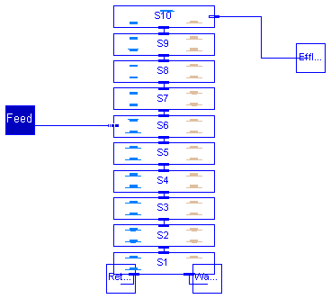
This component models an ASM3 10 - layer secondary clarifier model with 4 layers above the feed_layer (including top_layer) and 5 layers below the feed_layer (including bottom_layer) based on Takacs` theory.
| Name | Default | Description |
|---|---|---|
| hsc | 4.0 | height of secondary clarifier [m] |
| n | 10 | number of layers of SC model |
| zm | hsc/(1.0*n) | height of m-th secondary clarifier layer [m] |
| Asc | 1500.0 | area of secondary clarifier [m2] |
| Xt | 3000.0 | threshold for X [mg/l] |
model SecClarModTakacs
"ASM3 Secondary Clarifier Model based on Takacs"
extends WasteWater.Icons.SecClar;
extends ASM3.SecClar.Takacs.Interfaces.ratios;
package SCP = ASM3.SecClar.Takacs;
package SI = Modelica.SIunits;
package WI = ASM3.Interfaces;
package WWU = WasteWater.WasteWaterUnits;
parameter SI.Length hsc=4.0 "height of secondary clarifier";
parameter Integer n=10 "number of layers of SC model";
parameter SI.Length zm=hsc/(1.0*n) "height of m-th secondary clarifier layer";
parameter SI.Area Asc=1500.0 "area of secondary clarifier";
parameter WWU.MassConcentration Xt=3000.0 "threshold for X";
// total sludge concentration in clarifier feed
WWU.MassConcentration Xf;
WI.WWFlowAsm3in Feed;
WI.WWFlowAsm3out Effluent;
WI.WWFlowAsm3out Return;
WI.WWFlowAsm3out Waste;
// layers 1 to 10
SCP.bottom_layer S1(
zm=zm,
Asc=Asc,
Xf=Xf,
rXi=rXi,
rXs=rXs,
rXh=rXh,
rXsto=rXsto,
rXa=rXa);
SCP.lower_layer S2(
zm=zm,
Asc=Asc,
Xf=Xf);
SCP.lower_layer S3(
zm=zm,
Asc=Asc,
Xf=Xf);
SCP.lower_layer S4(
zm=zm,
Asc=Asc,
Xf=Xf);
SCP.lower_layer S5(
zm=zm,
Asc=Asc,
Xf=Xf);
SCP.feed_layer S6(
zm=zm,
Asc=Asc,
Xf=Xf);
SCP.upper_layer S7(
zm=zm,
Asc=Asc,
Xf=Xf,
Xt=Xt);
SCP.upper_layer S8(
zm=zm,
Asc=Asc,
Xt=Xt,
Xf=Xf);
SCP.upper_layer S9(
zm=zm,
Asc=Asc,
Xf=Xf,
Xt=Xt);
SCP.top_layer S10(
zm=zm,
Asc=Asc,
Xf=Xf,
Xt=Xt,
rXi=rXi,
rXs=rXs,
rXh=rXh,
rXsto=rXsto,
rXa=rXa);
equation
connect(S1.Up, S2.Dn);
connect(S2.Up, S3.Dn);
connect(S3.Up, S4.Dn);
connect(S5.Up, S6.Dn);
connect(S6.Up, S7.Dn);
connect(S7.Up, S8.Dn);
connect(S9.Up, S10.Dn);
connect(S4.Up, S5.Dn);
connect(S8.Up, S9.Dn);
connect(Feed, S6.In);
connect(S1.PQw, Waste);
connect(S10.Out, Effluent);
connect(S1.PQr, Return);
// total sludge concentration in clarifier feed
Xf = Feed.Xss;
// ratios of solid components
rXi = Feed.Xi/Xf;
rXs = Feed.Xs/Xf;
rXh = Feed.Xh/Xf;
rXsto = Feed.Xsto/Xf;
rXa = Feed.Xa/Xf;
end SecClarModTakacs;
WasteWater.ASM3.blower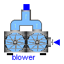
This component models a blower of a wastewater treatment plant which generates
an airflow that is needed for the nitrification.
The blower is connected to the nitrification tank.
The airflow is controlled by a signal u (-1 <= u <= 1).
| Name | Default | Description |
|---|---|---|
| Q_max | 20000 | maximum blower capacity [m3 Air/d], this is produced when the control signal u is 1 or greater |
| Q_min | 0.0 | minimum blower capacity [m3 Air/d], this is produced when the control signal u is -1 or below |
model blower "Blower for the aeration of the nitrification tanks"
extends WasteWater.Icons.blower;
package WWU = WasteWater.WasteWaterUnits;
parameter WWU.VolumeFlowRate Q_max=20000 "maximum blower capacity";
parameter WWU.VolumeFlowRate Q_min=0.0 "minimum blower capacity";
Real H;
//help variable to reduce expressions
Interfaces.AirFlow AirOut;
Modelica.Blocks.Interfaces.InPort u(final n=1);
equation
H = 0.5*(-Q_min + Q_max) + u.signal[1]*0.5*(-Q_min + Q_max) + Q_min;
AirOut.Q_air = -(if H > Q_max then Q_max else if H < Q_min then Q_min else H)
;
end blower;

This component models an ASM3 wastewater pump. It generates a wastewater flow that is controlled by the signal u (-1 <= u <=1).
| Name | Default | Description |
|---|---|---|
| Q_min | 0.0 | maximum pump capacity [m3/d], this is produced when the control signal u is 1 or greater |
| Q_max | 20000 | minimum pump capacity [m3/d], this is produced when the control signal u is -1 or below |
model pump "ASM3 wastewater pump" extends WasteWater.Icons.pump; package WWU = WasteWater.WasteWaterUnits; parameter WWU.VolumeFlowRate Q_min=0.0 "minimum pump capacity"; parameter WWU.VolumeFlowRate Q_max=20000 "maximum pump capacity"; Real H; // help variable to reduce expressions Interfaces.WWFlowAsm3in In; Interfaces.WWFlowAsm3out Out; Modelica.Blocks.Interfaces.InPort u(final n=1); equation H = 0.5*(-Q_min + Q_max) + u.signal[1]*0.5*(-Q_min + Q_max) + Q_min; Out.Q = -(if H > Q_max then Q_max else if H < Q_min then Q_min else H); Out.Q + In.Q = 0; Out.So = In.So; Out.Si = In.Si; Out.Ss = In.Ss; Out.Snh = In.Snh; Out.Snox = In.Snox; Out.Sn2 = In.Sn2; Out.Salk = In.Salk; Out.Xi = In.Xi; Out.Xs = In.Xs; Out.Xh = In.Xh; Out.Xsto = In.Xsto; Out.Xa = In.Xa; Out.Xss = In.Xss; end pump;
WasteWater.ASM3.FlowSource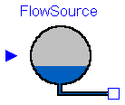
This component is used to feed an ASM3 wwtp model with flow data from measurement when e.g. concentration is measured after the primary clarifier. The dimension of InPort is 1: 1 Volumeflowrate Q of incoming wastewater [m3/d]
model FlowSource "Flowsource" extends WasteWater.Icons.FlowSource; Interfaces.WWFlowAsm3out Out; Modelica.Blocks.Interfaces.InPort data(final n=1); equation Out.Q = -data.signal[1]; end FlowSource;
WasteWater.ASM3.WWSource

This component provides all ASM3 data at the influent of a wastewater treatment plant. The dimension of InPort is 13: 1 Volumeflowrate Q of incoming wastewater [m3/d] 2 So [g O2/m3] 3 Si [g COD/m3] 4 Ss [g COD/m3] 5 Snh [g N/m3] 6 Sn2 [g N/m3] 7 Snox [g N/m3] 8 Salk [mmol/l] 9 Xi [g COD/m3] 10 Xs [g COD/m3] 11 Xh [g COD/m3] 12 Xsto [g COD/m3] 13 Xa [g COD/m3]
All ASM3 conversion factors for the calculation of Xtss.
| Name | Default | Description |
|---|---|---|
| f_Si | 0.0 | Production of Si in hydrolysis [g COD_Si/(g COD_Xs)] |
| Y_STO_O | 0.85 | Aerobic yield of stored product per Ss [g COD_Xsto/(g COD_Ss)] |
| Y_STO_NOX | 0.80 | Anoxic yield of stored product per Ss [g OD_Xsto/(g COD_Ss)] |
| Y_H_O | 0.63 | Aerobic yield of heterotrophic biomass [g COD_Xh/(g COD_Xsto)] |
| Y_H_NOX | 0.54 | Anoxic yield of heterotrophic biomass [g COD_Xh/(g COD_Xsto)] |
| Y_A | 0.24 | Yield of autotrophic biomass per NO3-N [g COD_Xa/(g N_Snox)] |
| f_Xi | 0.20 | Production of Xi in endog. respiration [g COD_Xi/(g COD_Xbm)] |
| i_N_Si | 0.01 | N content of Si [g N/(g COD_Si)] |
| i_N_Ss | 0.03 | N content of Ss [g N/(g COD_Ss)] |
| i_N_Xi | 0.02 | N content of Xi [g N/(g COD_Xi)] |
| i_N_Xs | 0.04 | N content of Xs [g N/(g COD_Xs)] |
| i_N_BM | 0.07 | N content of biomass Xh,Xa [g N/(g COD_bm)] |
| i_SS_Xi | 0.75 | SS to COD ratio for Xi [g SS/(g COD_Xi)] |
| i_SS_Xs | 0.75 | SS to COD ratio for Xs [g SS/(g COD_Xs)] |
| i_SS_BM | 0.90 | SS to COD ratio for biomass Xh,Xa [g SS/(g COD_Xbm)] |
model WWSource "Wastewater source"
extends WasteWater.Icons.WWSource;
extends ASM3.Interfaces.stoichiometry;
Interfaces.WWFlowAsm3out Out;
Modelica.Blocks.Interfaces.InPort data(final n=13);
equation
Out.Q = -data.signal[1];
Out.So = data.signal[2];
Out.Si = data.signal[3];
Out.Ss = data.signal[4];
Out.Snh = data.signal[5];
Out.Sn2 = data.signal[6];
Out.Snox = data.signal[7];
Out.Salk = data.signal[8];
Out.Xi = data.signal[9];
Out.Xs = data.signal[10];
Out.Xh = data.signal[11];
Out.Xsto = data.signal[12];
Out.Xa = data.signal[13];
Out.Xss = i_SS_Xi*Out.Xi + i_SS_Xs*Out.Xs + i_SS_BM*Out.Xh + 0.60*Out.Xsto +
i_SS_BM*Out.Xa;
//Out.Xss = data.signal[14];
end WWSource;

This component terminates an ASM3 wastewater treatment plant model e.g. the wastewater flow to the receiving water.
model EffluentSink "Receiving water (river)" //only for graphical termination in diagramm layer, no equations needed extends WasteWater.Icons.EffluentSink; Interfaces.WWFlowAsm3in In; equation end EffluentSink;

This component terminates the waste sludge stream of an ASM3 wastewater
treatment plant model. Storage or further sludge treatment is not jet considered.
model SludgeSink "Wastesludge sink" // only for graphical termination in diagramm layer, no equations needed extends WasteWater.Icons.SludgeSink; Interfaces.WWFlowAsm3in In; equation end SludgeSink;
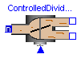
This component divides one wastewater flow (ASM3) into two flows which are controlled by the signal u (0...1). Is u.signal=1, the flow goes to output 1 (Out1) and is u.signal=0, the flow goes to output 2 (Out2). The concentrations of the outport-flows are equal to the concentration at inport.
model ControlledDivider2 "Controlled flow divider" // divides one flow of wastewater into 2 Flows controlled by the // input signal u; u=1 means Out1.Q=In.Q and u=0 means Out2.Q=In.Q extends WasteWater.Icons.ControlledDivider2; Interfaces.WWFlowAsm3in In; Interfaces.WWFlowAsm3out Out1; Interfaces.WWFlowAsm3out Out2; Modelica.Blocks.Interfaces.InPort u(final n=1); equation Out1.Q = -In.Q*u.signal[1]; Out2.Q = -In.Q*(1 - u.signal[1]); Out1.So = In.So; Out1.Si = In.Si; Out1.Ss = In.Ss; Out1.Snh = In.Snh; Out1.Sn2 = In.Sn2; Out1.Snox = In.Snox; Out1.Salk = In.Salk; Out1.Xi = In.Xi; Out1.Xs = In.Xs; Out1.Xh = In.Xh; Out1.Xsto = In.Xsto; Out1.Xa = In.Xa; Out1.Xss = In.Xss; Out2.So = In.So; Out2.Si = In.Si; Out2.Ss = In.Ss; Out2.Snh = In.Snh; Out2.Sn2 = In.Sn2; Out2.Snox = In.Snox; Out2.Salk = In.Salk; Out2.Xi = In.Xi; Out2.Xs = In.Xs; Out2.Xh = In.Xh; Out2.Xsto = In.Xsto; Out2.Xa = In.Xa; Out2.Xss = In.Xss; end ControlledDivider2;
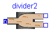
This component divides one ASM3 wastewater flow into two ASM3 wastewater flows.
model divider2 "Flowdivider"
// divides one flow of wastewater into 2 Flows; one amout needs to be specified
extends WasteWater.Icons.divider2;
Interfaces.WWFlowAsm3in In;
Interfaces.WWFlowAsm3out Out1;
Interfaces.WWFlowAsm3out Out2;
equation
In.Q + Out1.Q + Out2.Q = 0;
Out1.So = In.So;
Out1.Si = In.Si;
Out1.Ss = In.Ss;
Out1.Snh = In.Snh;
Out1.Sn2 = In.Sn2;
Out1.Snox = In.Snox;
Out1.Salk = In.Salk;
Out1.Xi = In.Xi;
Out1.Xs = In.Xs;
Out1.Xh = In.Xh;
Out1.Xsto = In.Xsto;
Out1.Xa = In.Xa;
Out1.Xss = In.Xss;
Out2.So = In.So;
Out2.Si = In.Si;
Out2.Ss = In.Ss;
Out2.Snh = In.Snh;
Out2.Sn2 = In.Sn2;
Out2.Snox = In.Snox;
Out2.Salk = In.Salk;
Out2.Xi = In.Xi;
Out2.Xs = In.Xs;
Out2.Xh = In.Xh;
Out2.Xsto = In.Xsto;
Out2.Xa = In.Xa;
Out2.Xss = In.Xss;
end divider2;
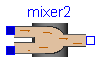
This component mixes two flows of wastewater (ASM3) of different concentration and different amount.
model mixer2 "Mixer of two ASM3 characterised flows" extends WasteWater.Icons.mixer2; Interfaces.WWFlowAsm3in In1; Interfaces.WWFlowAsm3in In2; Interfaces.WWFlowAsm3out Out; equation In1.Q + In2.Q + Out.Q = 0; Out.So = (In1.So*In1.Q + In2.So*In2.Q)/(In1.Q + In2.Q); Out.Si = (In1.Si*In1.Q + In2.Si*In2.Q)/(In1.Q + In2.Q); Out.Ss = (In1.Ss*In1.Q + In2.Ss*In2.Q)/(In1.Q + In2.Q); Out.Snh = (In1.Snh*In1.Q + In2.Snh*In2.Q)/(In1.Q + In2.Q); Out.Sn2 = (In1.Sn2*In1.Q + In2.Sn2*In2.Q)/(In1.Q + In2.Q); Out.Snox = (In1.Snox*In1.Q + In2.Snox*In2.Q)/(In1.Q + In2.Q); Out.Salk = (In1.Salk*In1.Q + In2.Salk*In2.Q)/(In1.Q + In2.Q); Out.Xi = (In1.Xi*In1.Q + In2.Xi*In2.Q)/(In1.Q + In2.Q); Out.Xs = (In1.Xs*In1.Q + In2.Xs*In2.Q)/(In1.Q + In2.Q); Out.Xh = (In1.Xh*In1.Q + In2.Xh*In2.Q)/(In1.Q + In2.Q); Out.Xsto = (In1.Xsto*In1.Q + In2.Xsto*In2.Q)/(In1.Q + In2.Q); Out.Xa = (In1.Xa*In1.Q + In2.Xa*In2.Q)/(In1.Q + In2.Q); Out.Xss = (In1.Xss*In1.Q + In2.Xss*In2.Q)/(In1.Q + In2.Q); end mixer2;
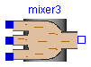
This component mixes 3 flows of wastewater (ASM3) of different concentration and different amount.
model mixer3 "Mixer of 3 ASM3 characterised flows"
// mixes 3 flows of wastewater of different concentration and different amount
extends WasteWater.Icons.mixer3;
Interfaces.WWFlowAsm3in In1;
Interfaces.WWFlowAsm3in In2;
Interfaces.WWFlowAsm3in In3;
Interfaces.WWFlowAsm3out Out;
equation
In1.Q + In2.Q + In3.Q + Out.Q = 0;
Out.So = (In1.So*In1.Q + In2.So*In2.Q + In3.So*In3.Q)/(In1.Q + In2.Q + In3.Q);
Out.Si = (In1.Si*In1.Q + In2.Si*In2.Q + In3.Si*In3.Q)/(In1.Q + In2.Q + In3.Q);
Out.Ss = (In1.Ss*In1.Q + In2.Ss*In2.Q + In3.Ss*In3.Q)/(In1.Q + In2.Q + In3.Q);
Out.Snh = (In1.Snh*In1.Q + In2.Snh*In2.Q + In3.Snh*In3.Q)/(In1.Q + In2.Q + In3.Q);
Out.Sn2 = (In1.Sn2*In1.Q + In2.Sn2*In2.Q + In3.Sn2*In3.Q)/(In1.Q + In2.Q + In3.Q);
Out.Snox = (In1.Snox*In1.Q + In2.Snox*In2.Q + In3.Snox*In3.Q)/(In1.Q + In2.Q + In3.Q);
Out.Salk = (In1.Salk*In1.Q + In2.Salk*In2.Q + In3.Salk*In3.Q)/(In1.Q + In2.Q + In3.Q);
Out.Xi = (In1.Xi*In1.Q + In2.Xi*In2.Q + In3.Xi*In3.Q)/(In1.Q + In2.Q + In3.Q);
Out.Xs = (In1.Xs*In1.Q + In2.Xs*In2.Q + In3.Xs*In3.Q)/(In1.Q + In2.Q + In3.Q);
Out.Xh = (In1.Xh*In1.Q + In2.Xh*In2.Q + In3.Xh*In3.Q)/(In1.Q + In2.Q + In3.Q);
Out.Xsto = (In1.Xsto*In1.Q + In2.Xsto*In2.Q + In3.Xsto*In3.Q)/(In1.Q + In2.Q + In3.Q);
Out.Xa = (In1.Xa*In1.Q + In2.Xa*In2.Q + In3.Xa*In3.Q)/(In1.Q + In2.Q + In3.Q);
Out.Xss = (In1.Xss*In1.Q + In2.Xss*In2.Q + In3.Xss*In3.Q)/(In1.Q + In2.Q + In3.Q);
end mixer3;
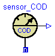
This component measures the chemical oxygen demand (COD) concentration [g/m3] of ASM3 wastewater and provides the result as output signal (to be further processed with blocks of the Modelica.Blocks library).
model sensor_COD "Ideal sensor to measure chemical oxygen demand (COD)" extends WasteWater.Icons.sensor_COD; Interfaces.WWFlowAsm3in In; Modelica.Blocks.Interfaces.OutPort COD(final n=1); equation In.Q = 0.0; COD.signal[1] = In.Si + In.Ss + In.Xi + In.Xs + In.Xh + In.Xsto + In.Xa; end sensor_COD;
WasteWater.ASM3.sensor_NH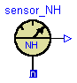
This component measures the ammonium nitrogen concentration [g/m3] of ASM3 wastewater and provides the result as output signal (to be further processed with blocks of the Modelica.Blocks library).
model sensor_NH "Ideal sensor to measure ammonium nitrogen" extends WasteWater.Icons.sensor_NH; Interfaces.WWFlowAsm3in In; Modelica.Blocks.Interfaces.OutPort Snh(final n=1); equation In.Q = 0; Snh.signal[1] = In.Snh; end sensor_NH;
WasteWater.ASM3.sensor_NO

This component measures the nitrate nitrogen concentration [g/m3] of ASM3 wastewater and provides the result as output signal (to be further processed with blocks of the Modelica.Blocks library).
model sensor_NO "Ideal sensor to measure nitrate nitrogen" extends WasteWater.Icons.sensor_NO; Interfaces.WWFlowAsm3in In; Modelica.Blocks.Interfaces.OutPort Sno(final n=1); equation In.Q = 0; Sno.signal[1] = In.Snox; end sensor_NO;
WasteWater.ASM3.sensor_O2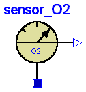
This component measures the dissolved oxygen concentration [g/m3] of ASM3 wastewater and provides the result as output signal (to be further processed with blocks of the Modelica.Blocks library).
model sensor_O2 "Ideal sensor to measure dissolved oxygen concentration" extends WasteWater.Icons.sensor_O2; Interfaces.WWFlowAsm3in In; Modelica.Blocks.Interfaces.OutPort So(final n=1); equation In.Q = 0; So.signal[1] = In.So; end sensor_O2;
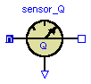
This component measures the flow of an ASM3 wastewater stream and provides the result as output signal (to be further processed with blocks of the Modelica.Blocks library).
model sensor_Q "Ideal sensor to measure the flow rate of an ASM1 wastewater stream" extends WasteWater.Icons.sensor_Q; Interfaces.WWFlowAsm3in In; Interfaces.WWFlowAsm3out Out; Modelica.Blocks.Interfaces.OutPort Q(final n=1); equation In.Q + Out.Q = 0; Q.signal[1] = In.Q; // eventually abs(In.Q) to be shure to have pos. signal In.So = Out.So; In.Si = Out.Si; In.Ss = Out.Ss; In.Snh = Out.Snh; In.Sn2 = Out.Sn2; In.Snox = Out.Snox; In.Salk = Out.Salk; In.Xi = Out.Xi; In.Xs = Out.Xs; In.Xh = Out.Xh; In.Xsto = Out.Xsto; In.Xa = Out.Xa; In.Xss = Out.Xss; end sensor_Q;

This component measures the Total Kjeldal Nitrogen (TKN) and the total nitrogen (N_total) concentration [g/m3] of ASM3 wastewater and provides the result as output signal (to be further processed with blocks of the Modelica.Blocks library). signal[1] - TKN signal[2] - N_total
| Name | Default | Description |
|---|---|---|
| f_Si | 0.0 | Production of Si in hydrolysis [g COD_Si/(g COD_Xs)] |
| Y_STO_O | 0.85 | Aerobic yield of stored product per Ss [g COD_Xsto/(g COD_Ss)] |
| Y_STO_NOX | 0.80 | Anoxic yield of stored product per Ss [g OD_Xsto/(g COD_Ss)] |
| Y_H_O | 0.63 | Aerobic yield of heterotrophic biomass [g COD_Xh/(g COD_Xsto)] |
| Y_H_NOX | 0.54 | Anoxic yield of heterotrophic biomass [g COD_Xh/(g COD_Xsto)] |
| Y_A | 0.24 | Yield of autotrophic biomass per NO3-N [g COD_Xa/(g N_Snox)] |
| f_Xi | 0.20 | Production of Xi in endog. respiration [g COD_Xi/(g COD_Xbm)] |
| i_N_Si | 0.01 | N content of Si [g N/(g COD_Si)] |
| i_N_Ss | 0.03 | N content of Ss [g N/(g COD_Ss)] |
| i_N_Xi | 0.02 | N content of Xi [g N/(g COD_Xi)] |
| i_N_Xs | 0.04 | N content of Xs [g N/(g COD_Xs)] |
| i_N_BM | 0.07 | N content of biomass Xh,Xa [g N/(g COD_bm)] |
| i_SS_Xi | 0.75 | SS to COD ratio for Xi [g SS/(g COD_Xi)] |
| i_SS_Xs | 0.75 | SS to COD ratio for Xs [g SS/(g COD_Xs)] |
| i_SS_BM | 0.90 | SS to COD ratio for biomass Xh,Xa [g SS/(g COD_Xbm)] |
model sensor_TKN "Ideal TKN and total nitrogen sensor"
extends WasteWater.Icons.sensor_TKN;
extends ASM3.Interfaces.stoichiometry;
Interfaces.WWFlowAsm3in In;
Modelica.Blocks.Interfaces.OutPort TKN(final n=2);
equation
In.Q = 0.0;
TKN.signal[1] = i_N_Si*In.Si + i_N_Ss*In.Ss + In.Snh + i_N_Xi*In.Xi
+ i_N_Xs*In.Xs + i_N_BM*(In.Xh + In.Xa);
TKN.signal[2] = TKN.signal[1] + In.Snox;
end sensor_TKN;

This component measures the total suspended solids concentration [g/m3] of ASM3 wastewater and provides the result as output signal (to be further processed with blocks of the Modelica.Blocks library).
model sensor_TSS "Ideal sensor to measure total suspended solids concentration (ASM3)" extends WasteWater.Icons.sensor_TSS; Interfaces.WWFlowAsm3in In; Modelica.Blocks.Interfaces.OutPort TSS(final n=1); equation In.Q = 0; TSS.signal[1] = In.Xss; end sensor_TSS;